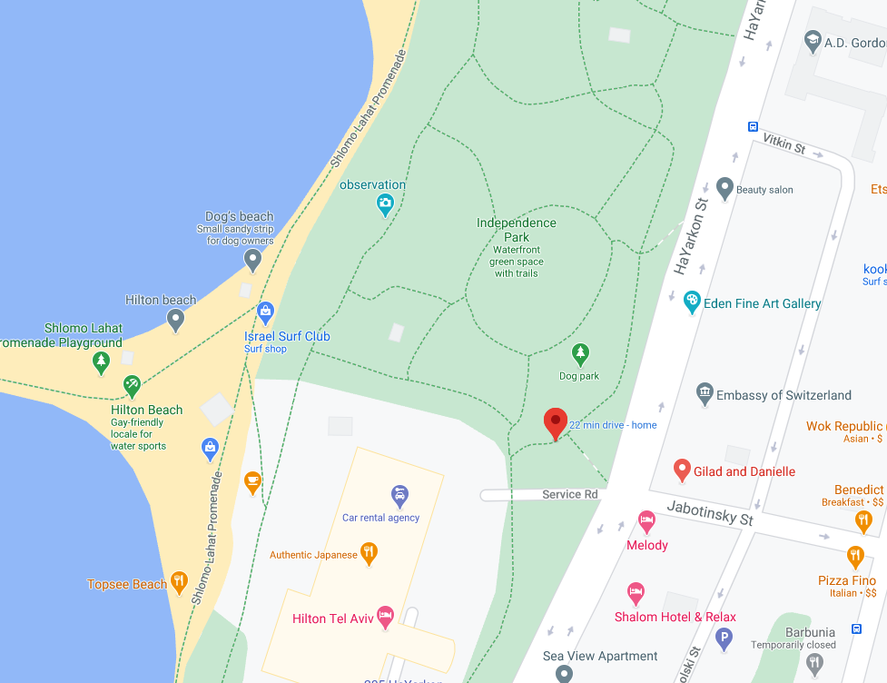
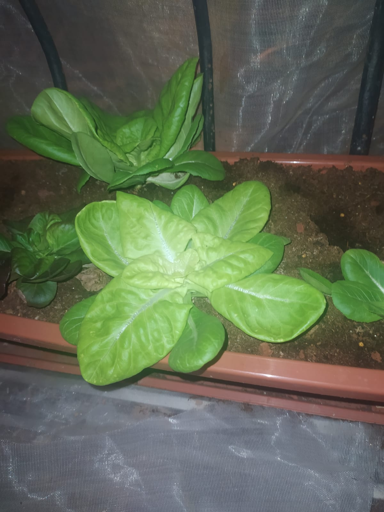
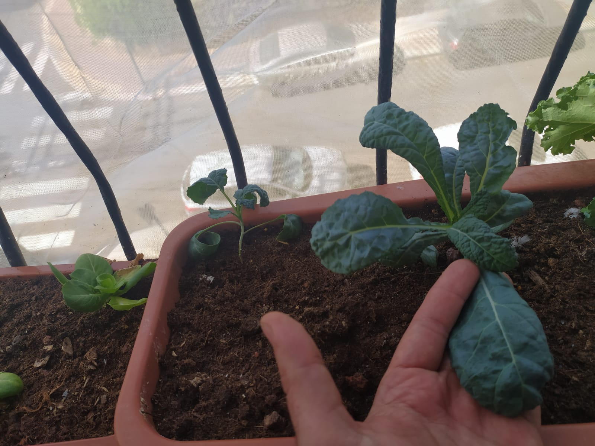
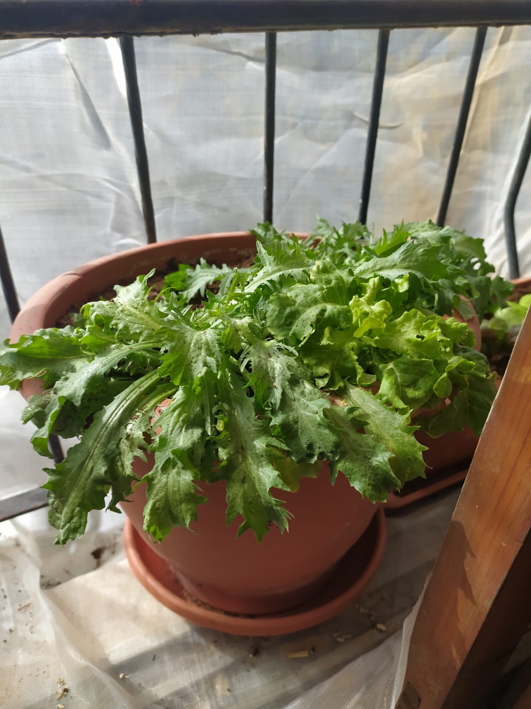

לכל אחד הזכות לגדל שתיל
אנחנו מאמינים שלכל אחד הזכות לגדל בבית שתיל או שניים. מחקרים הוכיחו פעמים רבות שעיסוק בצמחים וטיפוחם מסייע לבריאות פיזית ונפשית.
סטאטוס:
עקב ההיענות הרבה, נוכל לתת שתיל
לכל מי שקיבל אימייל מאתנו היום.
אם לא קיבלתם אימייל ונרשמתם בטופס - תקבלו בפעם הבאה
(אנחנו נוודא שתקבלו!)
אם לא נרשמתם עדין, ניתן להירשם לאירוע של נובמבר ב:
טופס
תודה!
אירוע החלוקה הקרוב:
יום שישי 23.10 - 11:00 בגן העצמאות
נחלק שתילונים בני שבוע של תרד, ברוקולי, סלנובה , כרוב ועוד.
מיקום: כניסה לגן העצמאות רחוב הירקון פינת זבוטינסקי (ליד פארק הכלבים)

דוגמאות:
| חסה סלנובה |
קייל |
חסה מסולסלת |
|  |
 |
 |